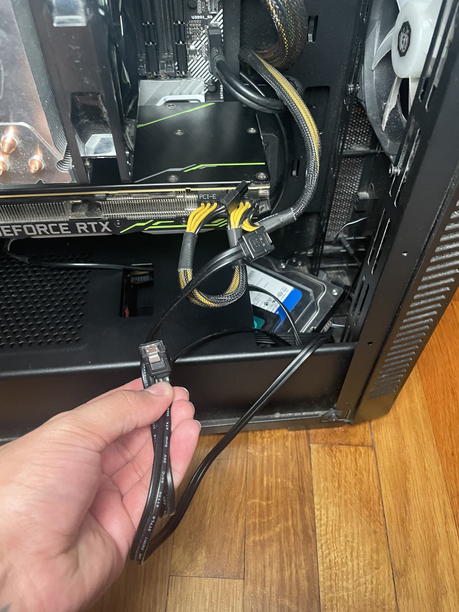
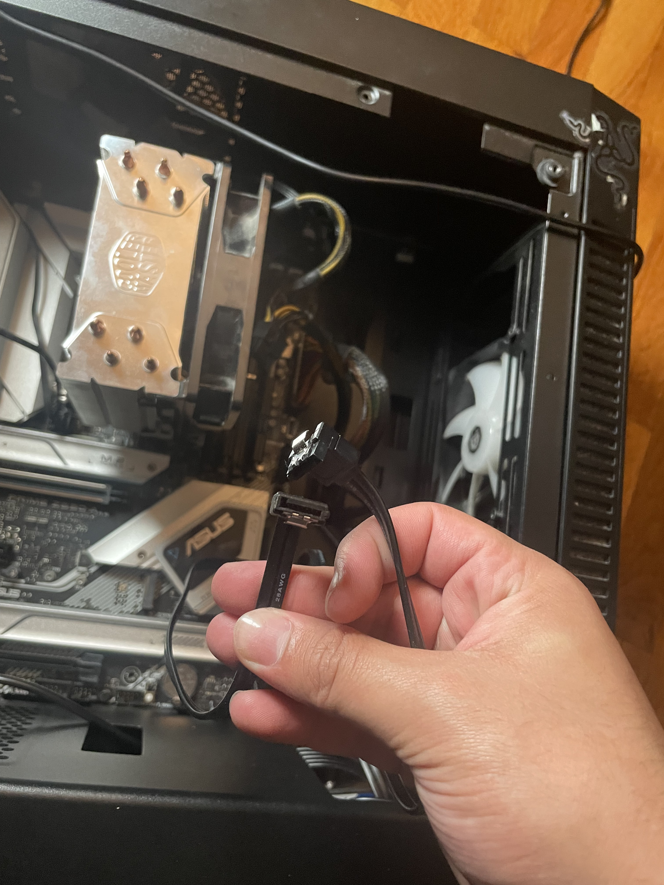
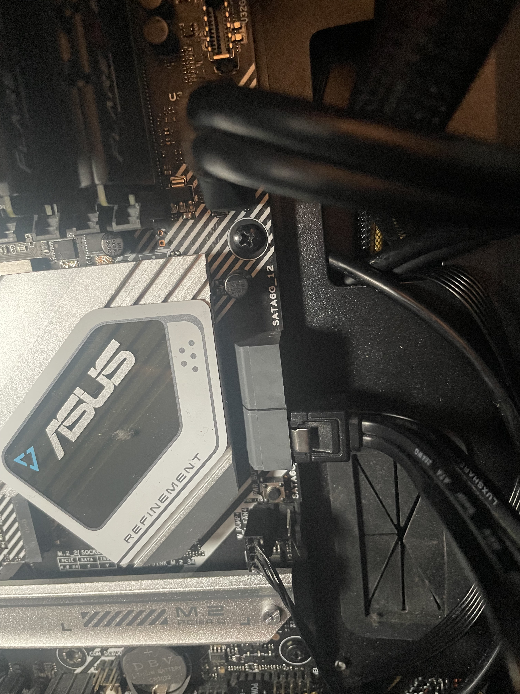
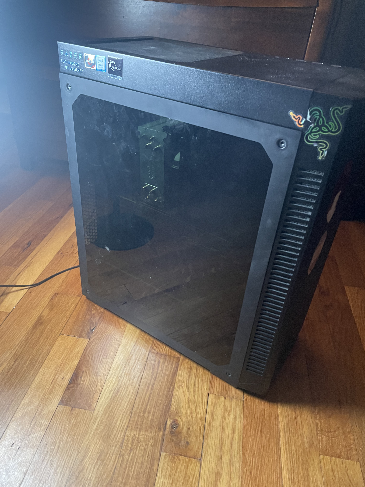

Step 8: Install Storage
Materials Needed
- SSD (Solid State Drive)
- HDD (Hard Disk Drive)
- 2 SATA Cables
- Phillips Head Screwdriver
Instructions
- Install the SSD and HDD in the Case
- SATA Cables to the Drives
- Connect the SATA Cables to the Motherboard
- Final Result
Place the SSD and HDD into their designated bays in the case or wherever you have space
Now you will be left with 2 SATA cables.
Locate the SATA ports on the motherboard and plug in the SATA cables.
Congratulations! You’ve completed the assembly! Now, simply plug your power cable into the wall and connect it to your PSU. Your PC is ready to power on. However, keep in mind that you'll need to install Windows for your system to boot up properly. I’ll guide you through that process in the next section, "Essential Steps."
